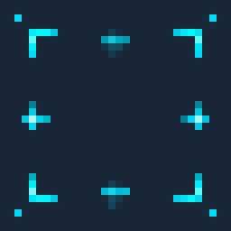
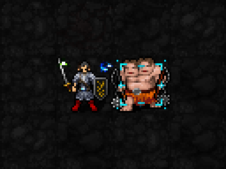
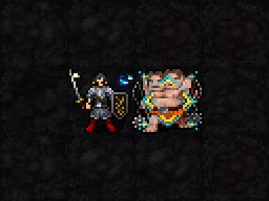
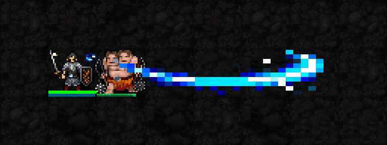
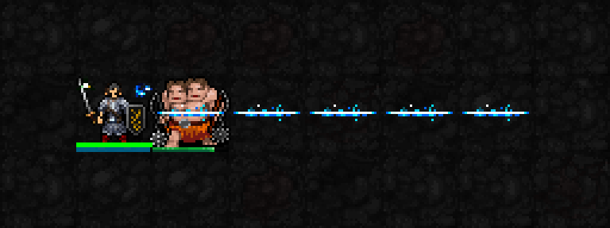
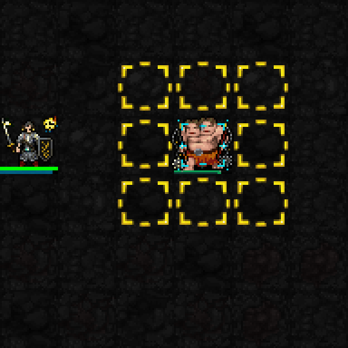

아래 인게임 장면은 실제 SDL 렌더러의 테스트 전투장 캡처입니다. 고정 장비·높은 HP/MP/신앙을 사용했습니다. 확대와 느린 프레임 반복만 적용했으며 효과를 덧그리지 않았습니다. 두 프레임 반복은 게임의 원래 속도와 다릅니다.
효과: 별을 쌓을 대상을 지정합니다. 지정 자체가 공격은 아닙니다. 이후 공격으로 별을 축적합니다.
표시: 가느다란 청록·금색 모서리 표식과 작은 별점이 선택한 적에게 남습니다. 대상이 움직이면 함께 이동하고, 다른 적을 지정하거나 대상이 사라지면 바뀝니다.
원본 32×32 도트 확대

실제 인게임 · 왼쪽 플레이어 / 오른쪽 지정한 적

점검할 것: 적의 모습과 HP 바가 읽히는지, 별 표식이 눈에 띄는지, 색과 크기가 적절한지.
1성 원본 전체 화면이전 버전과 비교:

위 이전 화면보다 표식의 채워진 픽셀이 약 65% 줄었습니다.
MP3·신앙3. 실제 관통 판정 방향의 최대 5칸을 가로지르는 하나의 곡선형 베기 궤적을 표시합니다. 흰 날이 지나간 뒤 갈라진 별빛 잔상이 남습니다. 별을 모은 표적에 적중하면 별을 소모해 추가 피해를 줍니다. 피해·비용은 바꾸지 않았습니다.
새 베기 궤적:

이전 직선형 효과:

MP6·신앙10. 지정 후 노랑→빨강 경고가 나오고, 실제 지연 시간이 끝날 때 혜성이 착탄합니다. 피해는 착탄 시점에 적용됩니다. 자신도 3×3에 들어가면 휘말릴 수 있습니다.
아래 순서 재생은 경고 → 착탄 2프레임 → 피해 적용 후입니다. 비교를 위해 시간을 늘렸습니다.
